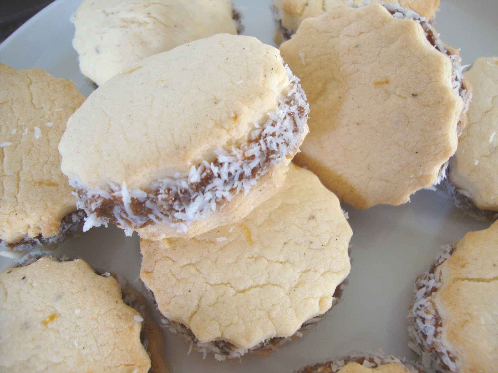

Alfajores

Description
This is a traditional cookie that is much loved in most Latin cultures. Even my mother in law says they're the BEST, and that is saying a lot considering she is from Mendoza, Argentina!
Ingredients
- 2 ½ cups cornstarch
- 1 ⅔ cups unbleached all-purpose flour
- 2 teaspoons baking powder
- ½ teaspoon baking soda
- ¾ cup white sugar
- 1 cup unsalted butter, softened
- 3 egg yolks
- ½ teaspoon vanilla extract
- 1 teaspoon vanilla rum
- 2 teaspoons lemon zest
- ½ teaspoon lemon extract
- ½ cup unsweetened shredded coconut
- 1 (11.5 ounce) jar dulce de leche
Steps
- Step 1: Preheat oven to 350 degrees F (175 degrees C). Line baking sheets with parchment paper. Whisk together the flour, cornstarch, baking soda, and baking powder; set aside.
- Step 2: Beat the butter and sugar with an electric mixer in a large bowl until light and fluffy. Add the egg yolks one at a time, allowing each yolk to blend into the butter mixture before adding the next. Beat in the vanilla rum, vanilla extract, lemon extract, and lemon zest with the last egg. Gently fold in the flour mixture with a spoon, making a crumbly dough. When the dough becomes cohesive enough, press it together into a ball with your hands. Wrap with plastic wrap and chill for 30 minutes to 1 hour.
- Step 3: Roll out the dough, using as little flour as possible, about 1/4 inch thick. The dough will have an unusual consistency. Cut with a small round cookie cutter. Continue pressing the dough together, rolling it out, and cutting until you have used it all. Place cookies 1/2 inch apart on the prepared cookie sheets.
- Step 4: Bake in the preheated oven until set but not browned, 7 to 10 minutes. Remove the cookies immediately to cool on a wire rack.
- Step 5: Spread the underside of a cooled cookie with a teaspoon of dulce de leche, then sandwich together with another cookie until the caramel oozes out the sides. Roll the sides in the shredded coconut.
Back